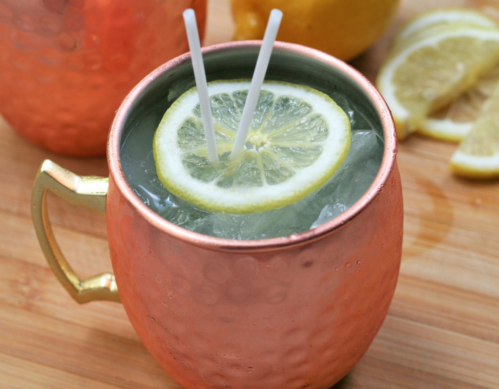

Limoncello Moscow Mule

Preparation Time
- Make: 5 mins
- Total: 55 mins
- Servings: 1
- Yield: 1 limoncello moscow mule
Ingredients
- 1 cup ice
- 1½ fluid ounce fresh lime juice
- 1½ fluid ounces limoncello liqueur
- 1½ fluid ounces vodka
- 5 ounces ginger beer
- 1 thin lemon slice (optional)
Directions
- Step 1
Fill a copper mule mug with ice. Add lime juice, limoncello, and vodka; stir to combine. Top with ginger beer. Lightly stir again and garnish with lemon slice.